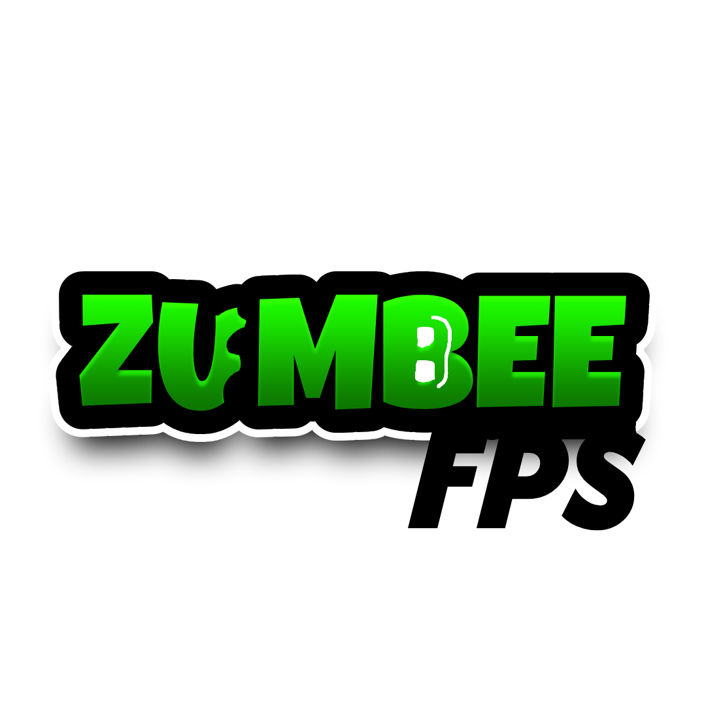

ZumbeeFPS
Entre no caos. ZumbeeFPS é um jogo de tiro em primeira pessoa com temática de zumbis e proposta arcade. Enfrente hordas, escolha suas armas e tente sobreviver em partidas de ação direta.
O pré-registro para Android será anunciado quando a página oficial da Google Play estiver disponível.

O jogo em detalhes.
Uma visão rápida das características confirmadas de ZumbeeFPS.
Ação direta.
Caos constante.
ZumbeeFPS é um FPS arcade desenvolvido pela GAEX Games Studio. A experiência coloca o jogador diante de hordas de zumbis, com foco em combate, armas e progressão dentro das partidas.
O projeto foi criado para Windows e Android e tem como base uma experiência single-player que pode ser aproveitada offline. A identidade visual e os sistemas do jogo evoluem a cada etapa de desenvolvimento.
- Desenvolvedora
- GAEX Games Studio
- Publicadora
- GAEX Games Studio
- Engine
- Unity 2022.3
- Gêneros
- Shooter · Arcade
- Temas
- Zumbis · Sobrevivência
- Perspectiva
- Primeira pessoa
- Modo
- Single-player
- Plataformas
- Windows · Android
O projeto continua evoluindo.
A próxima grande etapa é a versão 2.0.0, com previsão de lançamento para 30 de janeiro de 2027.
A atualização prepara uma nova etapa para o jogo, com reconstrução de sistemas, melhorias visuais, novas animações e conteúdos adicionais. A data indicada é uma previsão de lançamento.
Acesse o ZumbeeFPS.
Informações para catálogos e imprensa.
Dados editoriais reunidos para consulta por jogadores, imprensa e colaboradores de bases de dados de jogos.
Nome: ZumbeeFPS · Desenvolvedora: GAEX Games Studio · Publicadora: GAEX Games Studio · Gêneros: Shooter, Arcade · Tema: Zumbis · Perspectiva: Primeira pessoa · Modo: Single-player · Plataformas: Windows, Android · Engine: Unity 2022.3 · Site oficial: gaexgames.github.io/zumbeefps/ · Página de distribuição: gaexgames.itch.io/zumbeefps.
Os dados estruturados desta página usam Schema.org/VideoGame. A ficha em JSON é um documento de referência; ela não cria nem altera automaticamente uma entrada na IGDB.